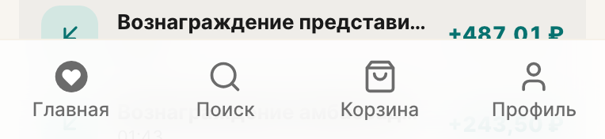
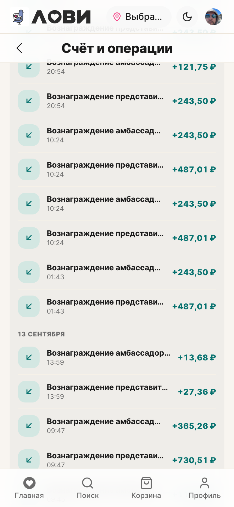
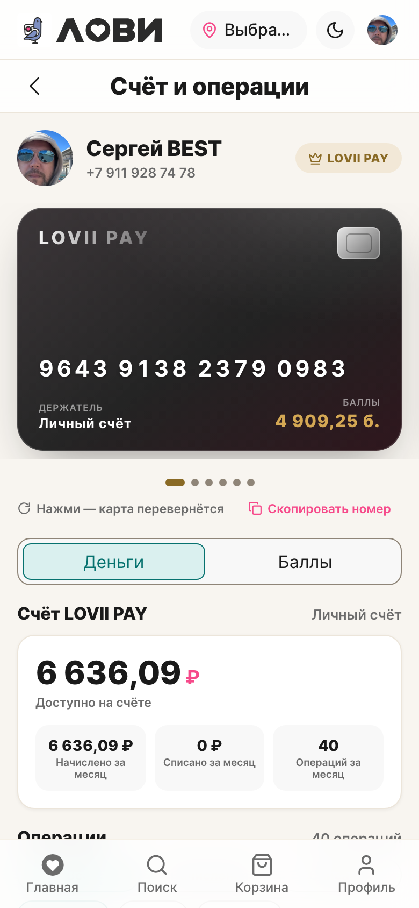
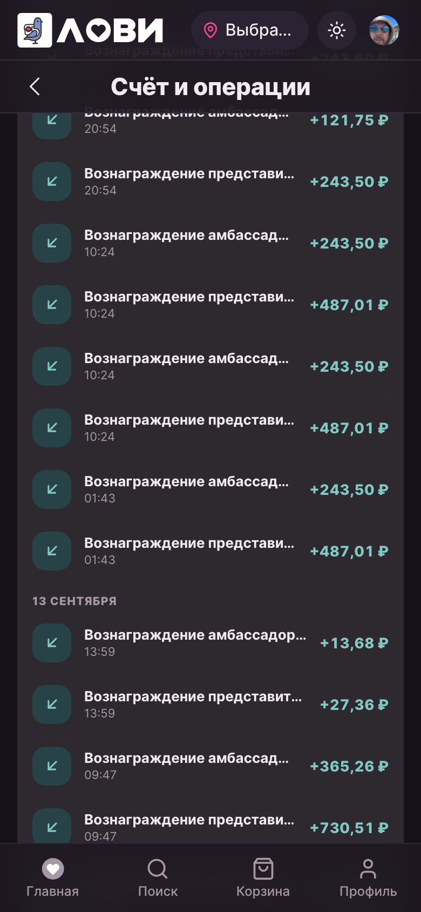
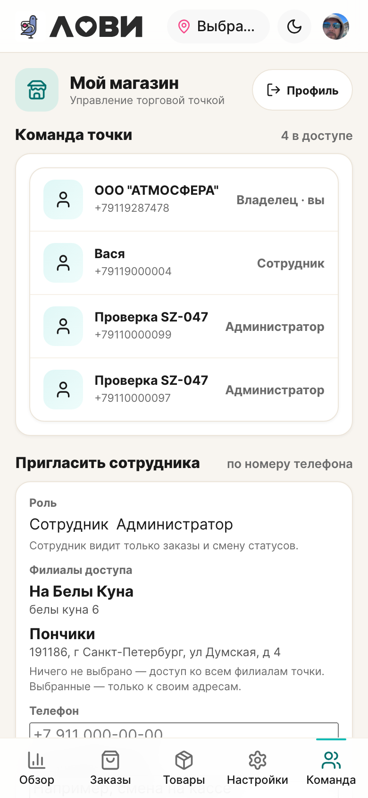
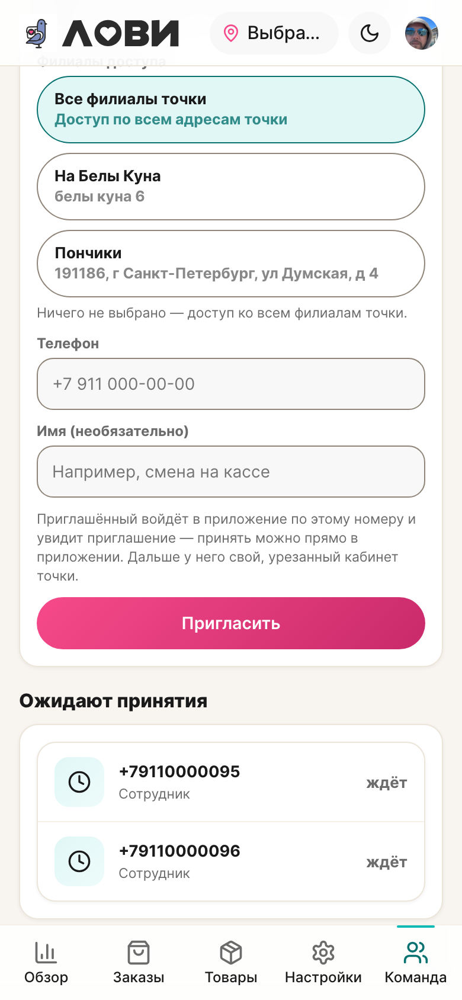
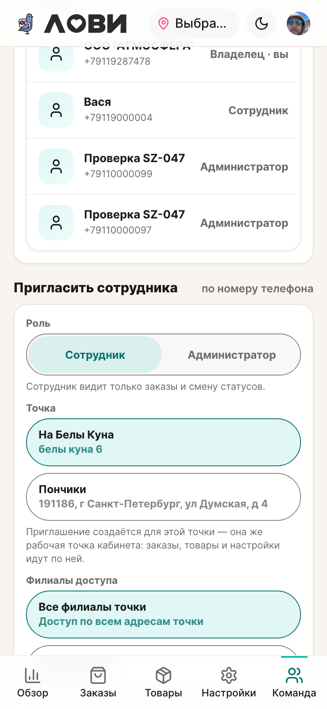
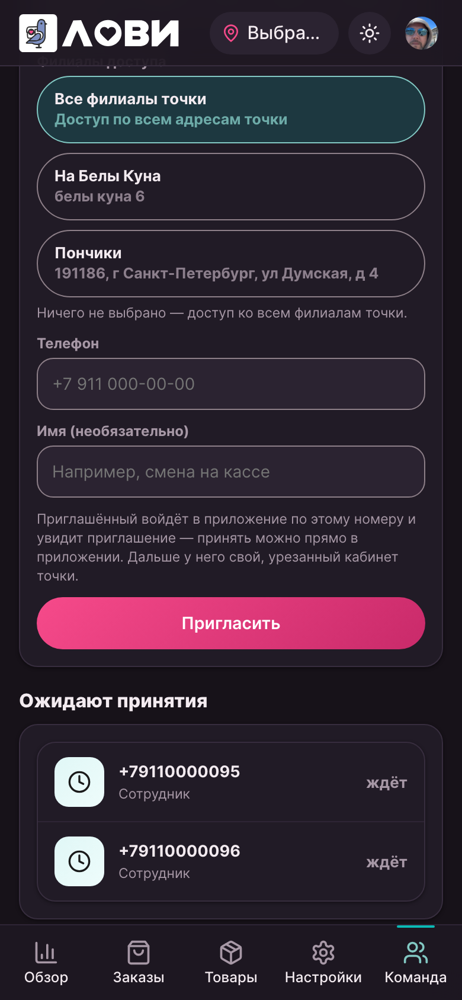
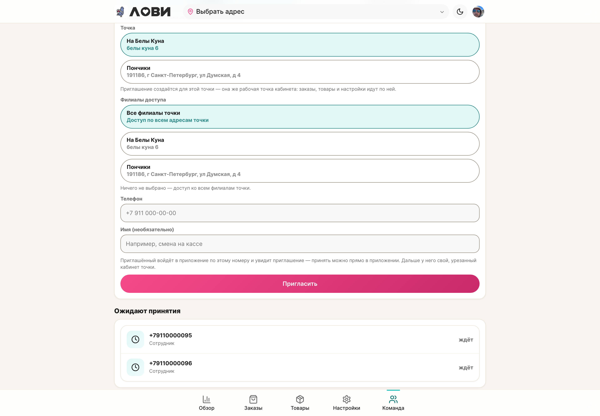

Правки по приёмке · сессия 109
Чипы, которые читаются чипами, и точка, которую видно
Четыре отклонения экрана «Счёт и операции», экран команды точки МСП и выбор точки при приглашении. Режим правок — доработка существующего интерфейса, без смены структуры и логики.
Коротко
- О1, О2, О3, О4 закрыты в контуре «Счёт и операции»: точки карусели, сегмент контура, активный и неактивный чипы фильтра. О5 (обрезка подписи адреса) и О6 (пустая левая колонка) — по вашей отмашке О5 не трогали, О6 закрыт липкой колонкой.
- Выбор теперь виден цветом выбора: активное состояние сегментов, чипов и фильтров — tiffany (пара soft-tiffany → tiffany-text, 4.8:1 в светлой и 5.9:1 в тёмной). Бренд-розовый остался действию: знак ₽, ссылки, кнопки.
- «Не видно, где кнопки, а где текст» на экране команды оказалось буквальным: кнопки ролей и филиалов использовали классы, для которых в компоненте не подключены стили, — это были голые
<button>. Подключены, плюс у контролов кабинета появился видимый контур. - Приглашение больше не «куда-то»: в форме появилась точка приглашения с переключением, доступ к филиалам — видимые чипы с состоянием «Все филиалы точки».
01Что сделано
| № | Что было | Что стало |
|---|---|---|
| 1 | Точки-индикаторы карусели: неактивная --lv-line — 1.15:1 к фону страницы, активная золотая — 2.03:1. В светлой теме индикатора фактически не было. |
Неактивная — --lv-line-strong (3.3:1), активная — --lv-gold-text (4.6:1 в светлой, 11:1 в тёмной). Золото карты сохранено. |
| 2 | Сегмент контура: активный — белая подложка на белой карточке, трек цвета страницы с почти невидимой рамкой. | Новый тон accent у сегмента: трек surface с контуром --lv-line-strong, актив — soft-tiffany с рамкой и текстом tiffany-text. Заодно возвращена тень канона активному сегменту в тоне surface. |
| 3 | Активный чип фильтра: --lv-pink-dark на soft-pink — 2.75:1 в тёмной теме, 4.18:1 в светлой. |
Активный — soft-tiffany + tiffany-text + рамка: 4.8:1 светлая, 7.3:1 тёмная. Пара soft-tiffany → tiffany-text канонная. |
| 4 | Неактивный чип: заливка --lv-surface на фоне --lv-bg — 1.02:1, ряд слипался в строку текста. |
Неактивный — заливка card + рамка --lv-line-strong (3.3:1), отступ между чипами 8px. Ряд читается рядом контролов. |
| 5 | На 768/1440 левая колонка заканчивалась на сводке счёта: 574px против 1613px у ленты — под сводкой «дыра» в полэкрана. | Левая колонка липнет к верху на широких экранах: карта и сводка остаются в кадре, пока читается лента. |
02«Счёт и операции»
Правки — в пределах экрана: разметка, порядок блоков, тексты и логика не менялись. Изменились состояния контролов и поведение левой колонки на широком экране.




| Элемент | До | После | Порог |
|---|---|---|---|
| Точка карусели, неактивная | 1.15:1 | 3.3:1 | 3:1 |
| Точка карусели, активная (светлая тема) | 2.03:1 | 4.6:1 | 3:1 |
| Чип фильтра, неактивный | 1.02:1 | 3.3:1 рамка | 3:1 |
| Чип фильтра, активный, тёмная тема | 2.75:1 | 7.3:1 | 4.5:1 |
| Чип фильтра, активный, светлая тема | 4.18:1 | 4.8:1 | 4.5:1 |
| Сегмент контура, активный | — (белое на белом) | 4.9:1 / 5.9:1 | 4.5:1 |
03Команда точки
Причина «не видно, где кнопки, а где текст» оказалась технической, а не вкусовой: кнопки выбора роли и филиалов использовали классы role-day и role-control, для которых в этом компоненте не подключены стили. В браузере это были голые элементы: прозрачный фон, нулевой радиус, обнулённый паддинг, высота 20px — то есть визуально текст.




Выбор точки приглашения
Раньше форма молчала, в какую точку уйдёт приглашение: оно уходило в рабочую точку кабинета, а её на этом экране не было видно. Теперь в форме есть поле «Точка»: одна точка — названа прямо, несколько — переключаются на месте, и кабинет перечитывает данные по выбранной (та же рабочая точка, что в «Обзоре»). Поле «Филиалы доступа» стало мультивыбором с чипом «Все филиалы точки», который показывает состояние по умолчанию.
| Действие | Результат |
|---|---|
| Открыть форму | Роль «Сотрудник» выбрана; активная точка отмечена; «Все филиалы точки» нажата; подпись «Ничего не выбрано — доступ ко всем филиалам точки» |
| Отметить филиал | «Все филиалы точки» снимается, выбранный чип подсвечивается, подпись → «Выбрано 1 — доступ только к отмеченным адресам» |
| Вернуть «Все филиалы точки» | Отметки снимаются, подпись возвращается к «доступ ко всем филиалам» |
| Переключить точку | Состав команды на экране перечитывается по новой точке (в проверке: 4 участника → 1) |
| Сменить роль на «Администратор» | Выбор переходит, подпись меняется на описание прав администратора; право выдавать администратора остаётся только у владельца |
04Общая причина в кабинете
На экране команды дефект был крайним случаем. У остальных контролов кабинета (чипы, поля, поиск, сегменты) контур брался из токена --lv-line — это цвет разделителя строк: 1.1:1 к карточке. Формально элемент есть, глазом — нет.
Контуры контролов кабинета переведены на --lv-line-strong — токен, который дизайн-система ввела именно для видимых границ контролов (3.3:1 к фону страницы, 4.4:1 к тёмной карточке) и который в сессии 106 уже применили к чекбоксам и радио. Правка сделана в общих миксинах кабинета, поэтому одинаково работает на команде, заказах, товарах и настройках точки.

05Проверки и цифры
| Проверка | Результат |
|---|---|
vitest run | 94 файла / 777 тестов — зелёные (было 94 / 777) |
| Страж дизайн-системы | зелёный: новых радиусов, теней и хардкода цветов не добавлено |
vue-tsc --build | чисто, exit 0 |
eslint / oxlint | 0 ошибок, 0 предупреждений |
vite build | собран, precache 215 записей |
| Показатель | Значение |
|---|---|
| Ошибки консоли | 0 на всех восьми прогонах |
| Горизонтальное переполнение | 0px |
| Фокус с клавиатуры | 2px #f64a8a на сегментах, чипах, полях и кнопках; у полей — кольцо поля |
| Наложения и обрезки | последний блок формы команды заканчивается за 4px до нижней навигации — контент не перекрыт |
06Открытые вопросы
Два места, где я не стал решать за вас — логика продукта, а не вёрстка.
- Пустой список филиалов уходит в ядро как «все точки юрлица». Кабинет команды (администратор с одной точкой) отправляет свой список явно, а кабинет МСП — то, что отмечено. Для владельца разницы нет, но если в МСП-кабинет попадёт администратор с урезанным доступом, контракт даст ему больше, чем он видит. Одна строка правки, но это изменение логики — жду вашего решения.
- «Точка» и «Филиалы доступа» — один и тот же список. Сейчас это два разных смысла: контекст приглашения и область доступа. Читаются различимо, но на двух точках выглядят как дубль. Если решите свести в один контрол — сделаю.
Правки по приёмке · сессия 109 · 2026-09-16 · lovii-app · режим «доработка» · 5 правок, 4 файла, гейты зелёные